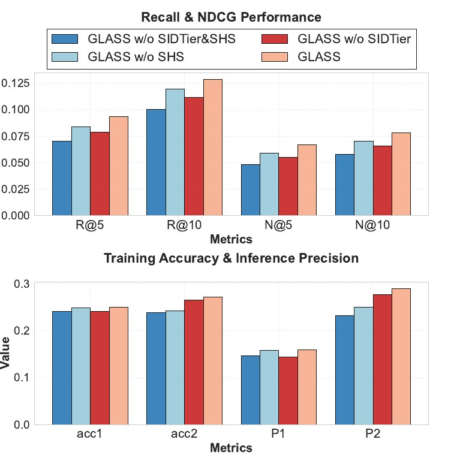
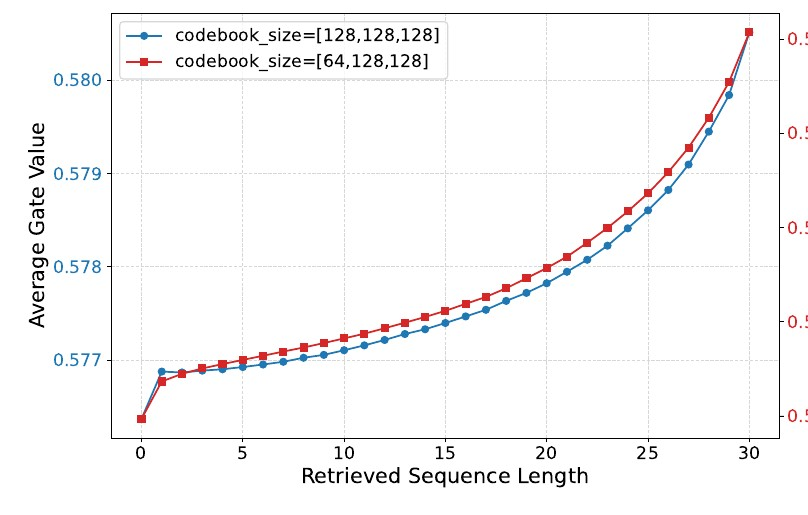

Generative recommendation encodes each item as a few levels of semantic IDs (SIDs) and uses a Transformer to generate the next item one code at a time. Attention cost grows quadratically with sequence length, so these models usually take only the most recent few dozen behaviors. In the paper's two datasets, the average user history length is 987 (TAOBAO-MM) and 884 (KuaiRec), yet the model input keeps only the last 50. The authors also observe a pattern: in plain generative retrieval, after the first-level code is generated, the true item's rank in the beam gets worse rather than better, with the average rank dropping by 1.25 at the second level. GLASS uses the long-term history differently for each SID level: before generating the first-level code, it compresses the whole long-term history into one interest token fed to the encoder; after the first-level code is generated, it uses that code as a retrieval key to pull items of the same broad category from the long-term history, which help generate the last two codes. On TAOBAO-MM, R@1 is 21.57% higher than the strongest baseline, DualGR; in a two-week A/B test on a short-video platform, app usage time per user rose 0.052% and recall rose 3 percentage points in absolute terms.
1. The problem: getting long histories into generative retrieval
The ranking stage has a mature recipe for long sequences, SIM's two-stage design: a GSU (General Search Unit) first uses the target item to retrieve a relevant sub-sequence from the long history, then an ESU (Exact Search Unit) runs fine-grained target attention over it. The retrieval stage has no target item, so the GSU has nothing to search with. OneRec and OneSearch use a Q-Former to compress long-term behavior into fixed-length vectors, which stops at the granularity of interest clusters. DualGR already uses SIDs as retrieval keys in generative retrieval, but it treats codes at every level the same way.
The authors start from the structure of SIDs themselves. The first-level code decides which broad category an item belongs to, and the last two codes locate the specific item inside that category. When the first-level code is generated there is no path yet, so the model needs the user's overall preference across categories; when the last two codes are generated the category is fixed, so the model needs what the user actually engaged with inside that category. The two levels need long-term information at different granularity, so it is injected in two places.
2. Overall structure
![The three parts of GLASS. On the left, (a) is the encoder-decoder backbone: the short-term sequence goes through a lookup table and self-attention into the encoder, and the SID-Tier at the bottom right outputs one token appended after the short-term sequence; each decoder layer has two cross-attention paths, one over the encoder output and one over the long-term items returned by Semantic Search, and the Gate in the middle merges them with weights g and 1−g. Top right, (b) is SID-Tier: similarity is computed between each first-level code and every item in the long-term history, counted into a histogram by similarity bin, normalized, and passed through an MLP. Bottom right, (c) is semantic search: the generated first-level code <a_5> hard-matches items in the long-term history whose first-level code is the same (Item1, Item3), and neighboring codes <a_2> and <a_8> are added when there are too few.](../../figs/2026-10-24/generative/recsys26-glass/fig1.jpg)
The backbone is a TIGER-style encoder-decoder. Each item's multimodal vector is quantized by RQ-VAE into three levels of codes; on the public datasets the codebook sizes are [64,128,128], the embedding dimension is 96, and the encoder and decoder each have 4 layers. The user history is sorted by time and split in two: the most recent 50 behaviors are the short-term sequence, and everything earlier is the long-term sequence.
3. First-level code: SID-Tier compresses the long-term history into one token
This step addresses the fact that the first-level code is generated with no clue at all. Running attention directly over the long-term history is too expensive, so the authors exploit the small size of the first-level codebook: there are only tens to a little over a hundred first-level codes, so cross features between the user history and every code can all be computed.
Each first-level code first gets a prototype vector , the mean of the vectors of all items whose first-level code is . The cosine-similarity range $[-1,1]$ is then split evenly into bins, and for each first-level code the model counts how many long-term history items fall into each bin:
is the multimodal vector of history item , maps a similarity to its bin, and is the indicator function. Intuitively, describes how many items in the user's history are very similar to category , how many are somewhat similar, and how many are not. The histograms of all first-level codes are concatenated into a vector of length , compressed by an MLP (hidden size 256) into one -dimensional vector , and appended after the short-term sequence embedding before entering the encoder.
This token depends only on the user history and the codebook, not on the item being generated, so it can be precomputed offline. It is really the familiar "user's historical preference statistics per category" feature from ranking models, computed over first-level SID codes instead.
4. The last two codes: retrieve from the long-term history with the generated first-level code
After the first-level code is generated, the model takes every item in the long-term history with the same first-level code:
This is SIM's hard search with the key changed from "the target item's category" to "the first-level code just generated". Each decoder layer runs self-attention and then two cross-attention paths in parallel: one with the encoder output as key/value, giving ; one with the retrieved item embeddings as key/value, giving . A gate merges the two:
is a projection and is the sigmoid. A large tilts the result toward the retrieved long-term items; a small tilts it toward the short-term sequence. The training objective is the standard autoregressive cross-entropy over the three codes.
5. What if too few items come back
Hard search has an obvious problem. In the paper's example, with a history of 1000 and a first-level codebook of 128, each first-level code retrieves only about 7.8 items on average: too little information, with a high share of noise. The authors offer two fixes:
- Semantic neighbor augmentation: precompute cosine similarities between first-level codes and record each code's top-k nearest neighbors. When fewer items than a threshold come back, the history items under the neighbor codes are merged in as well.
- Shrinking the first-level codebook: make the first-level codebook smaller during training so that each first-level code covers more items. The first level is responsible for volume, the last two for precision.
6. Experiments
Main results. The goal is to show that GLASS beats both ID-based sequential models and SID-based generative models. Both datasets keep only positive feedback: TAOBAO-MM keeps clicks, uniformly samples 10,000 items and keeps those that appear at least 5 times in the training set; KuaiRec keeps samples whose play time exceeds the video length. The table below takes, from the paper's Table 2, the strongest ID model HSTU and two SID baselines: TIGER is standard generative retrieval, and DualGR uses separate long- and short-term branches with routing.
| Dataset | Model | R@1 | R@5 | R@10 | N@10 |
|---|---|---|---|---|---|
| TAOBAO-MM | HSTU | 0.0274 | 0.0512 | 0.0784 | 0.0495 |
| TAOBAO-MM | TIGER | 0.0280 | 0.0756 | 0.1076 | 0.0627 |
| TAOBAO-MM | DualGR | 0.0306 | 0.0781 | 0.1126 | 0.0653 |
| TAOBAO-MM | GLASS | 0.0372 | 0.0934 | 0.1284 | 0.0782 |
| KuaiRec | HSTU | 0.0334 | 0.0845 | 0.1183 | 0.0704 |
| KuaiRec | TIGER | 0.0406 | 0.0859 | 0.1202 | 0.0751 |
| KuaiRec | DualGR | 0.0445 | 0.0932 | 0.1292 | 0.0821 |
| KuaiRec | GLASS | 0.0467 | 0.0971 | 0.1345 | 0.0855 |
On KuaiRec the gain is only 3.81%–4.94%. The authors attribute this to KuaiRec's multimodal vectors coming from a simple text encoding, which gives poorer SIDs, whereas TAOBAO-MM uses multimodal features trained with contrastive learning.
Which level each module helps. This ablation shows that SID-Tier mainly helps the first-level code and semantic search mainly helps the second. The authors track two quantities: , the training accuracy of the level- code under teacher forcing, and , the probability that the level- code is also correct under top-1 beam search given all earlier levels are correct. Adding SID-Tier raises from 0.2410 to 0.2485, from 0.1470 to 0.1587, and Recall@5 from 0.0702 to 0.0842. Adding semantic search on top mainly lifts and .

Why the rank drops. The authors define Conditional Rank Progression (CRP): over samples whose first $d-1$ codes all stayed in the beam, the average rank of the correct level- code among the top-K candidates; closer to 1 is better. With beam size 20, the plain generative model's rank worsens by 1.25 on average at the second level, and only by 0.98 with semantic search; at the third level the worsening falls from 0.19 to 0.13. The cause is that when a plain model generates the last two codes, its conditioning context is still the original one, with no new information to widen the probability gap between the right answer and the distractors.
Does the gate matter. A fixed weight of 0.5 helps when the first-level codebook is small but hurts once the codebook gets finer, because retrieved-sequence length varies a lot, and when it is too short the noise flows straight into beam search's cumulative probabilities. The learned gate value rises overall with retrieval length: the more items are retrieved, the more weight the model puts on the long-term branch.

Sparsity fixes. Shrinking the first-level codebook gave the best Recall@10. Semantic neighbor augmentation helps only without codebook shrinking; adding neighbors on top of a shrunken codebook lowers the metrics slightly, which the authors attribute to neighbor items blurring the boundaries between different interests.
Online. A two-week A/B test on a short-video platform, with 3% of users (about 12 million) in each of the treatment and control groups. At 95% confidence, total app usage time rose 0.056%, app usage time per user rose 0.052%, and recall rose 3 percentage points in absolute terms.
7. Limitations and what to try
The paper has no separate limitations discussion; two facts are worth keeping in mind. The public datasets are small: KuaiRec has only 3790 users and TAOBAO-MM's items are sampled down to 10,000, far from industrial codebook scale. Results are sensitive to SID quality: on TAOBAO-MM each metric improves 14.03%–29.91% over the strongest baseline, on KuaiRec only 3.81%–4.94%.
If you work on generative retrieval and have long behavior sequences, two things are worth trying directly:
- Append the "user's historical preference histogram over first-level codes" as an extra token to the encoder input; it can be computed offline and adds almost no online cost.
- Before doing hard search with the generated first-level code, measure how many items each first-level code retrieves from user histories on average; if too few, try shrinking the first-level codebook first and neighbor augmentation second.